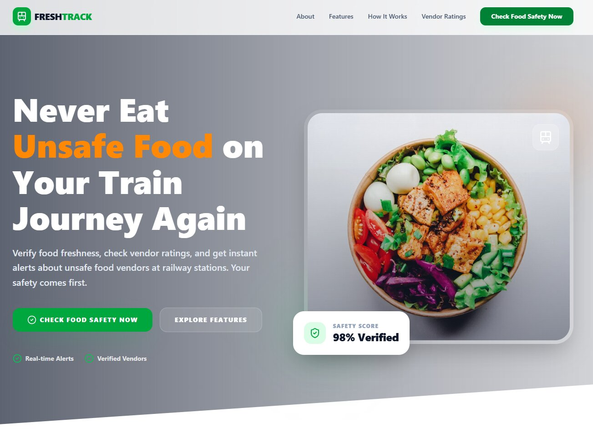
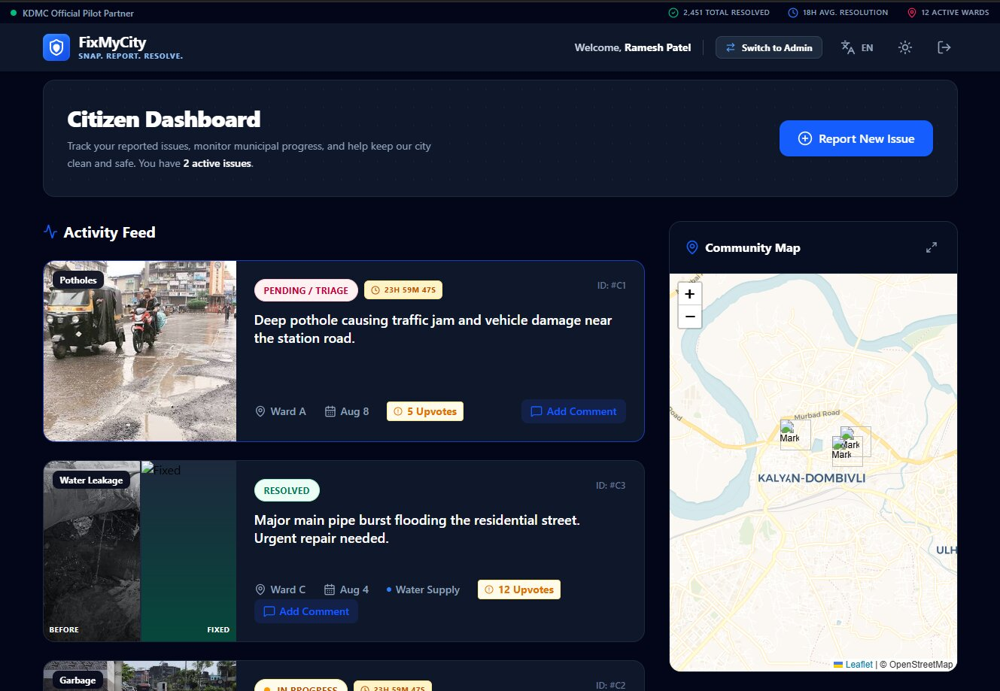

Featured Work
1. Food Freshness Verifier Concept
A conceptual web application interface designed to alert users about fresh and expiring food inventory using local storage and user role tracking.

2. FixMyCity

A conceptual web application interface designed to alert users about fresh and expiring food inventory using local storage and user role tracking.

